By Khoo An Xian
In the first part of this project, we use the DeepFloyd IF diffusion model to implement tasks such as inpainting and creating optical illusions. In the second part, we move on to train our own flow matching model from scratch on MNIST data.
In part 0, we generate embeddings for 3 text prompts to use as inputs to our diffusion model. The outputs of our model generally correspond well to the prompts, and the images show recognizable features of the described objects.
We tested num_inference_steps = 10 (first row) and num_inference_steps = 50 (2nd row). More inference steps seem to slow generation, but resulting images may be more detailed. Random seed = 100.
In part 1, we write the forward process of diffusion, which takes a clean image and adds noise to it. we get a noisy image xt at timestep t by sampling from a Gaussian ~N(0,1). Below, we show the test image of Campanile at noise levels [250, 500, 750].
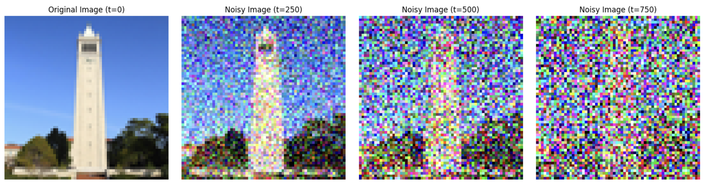
Now, we implement the backward process which involves denoising the images created from forward(). We explore 3 denoising methods:
For each method, we showcase the results of denoising on the test image of Campanile.
To implement One-Step Denoising, we first predict the noise in our noisy images via noise_est = stage_1.unet(im_noisy, t), then subtract noise_est from im_noisy.
We see that UNet does a much better job of projecting the image onto the natural image manifold than gaussian blur.
Now, we implement iterative denoising. We first create a list of monotonically decreasing timesteps strided_timesteps (strided_timesteps[0] = largest t = noisiest image). Then, the function iterative_denoise(im_noisy, i_start)
takes a noisy image starting at timestep[i_start], applies the denoising formula to obtain an image at timestep[i_start + 1], and repeats until we arrive at a clean image. The denoising formula can be thought
of as a linear interpolation between the signal and noise.
Below, we show the noisy Campanile every 5th loop of denoising, the final clean image, and a comparison across all 3 denoising methods we have explored so far.
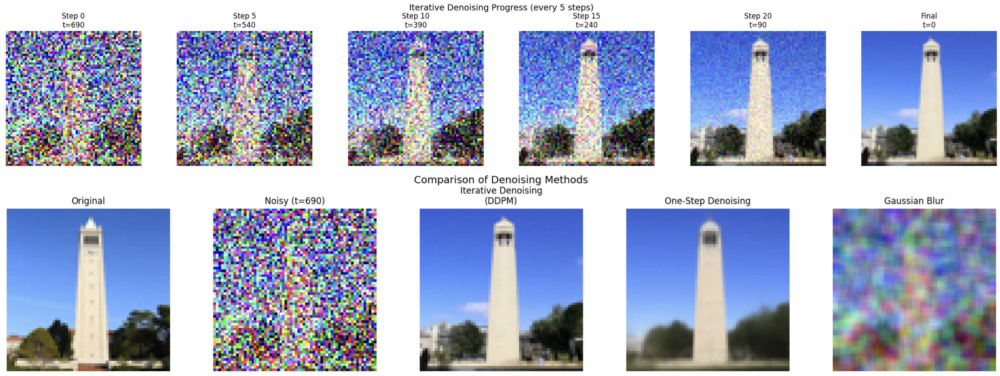
Iterative denoising can also be used to generate random images from scratch. Instead of applying iterative_denoising() to a specific test image, we can apply it to a random noise image and denoise from pure noise with a generic prompt
"a high quality photo". These are 5 images sampled via this method.
Now lets try improving the quality of our sampled images via Classifier-Free Guidance. In CFG, we compute a conditional noise estimate using our prompt ("a high quality photo") and an unconditional noise estimate using a null prompt (""), and combine them to get a CFG noise estimate which is used for denoising. Now, our prompt ("a high quality photo") becomes a condition to generate conditional noise, and we get much better results than previous tries.
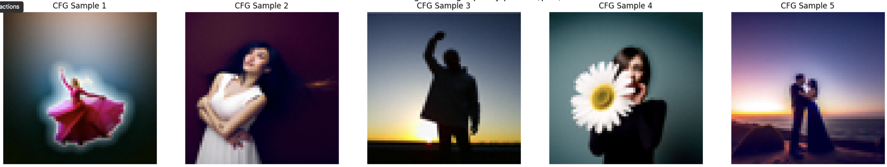Now, we illustrate the difference that CFG makes.
In part 1.4, we usedclean = iterative_denoise(im_noisy, i_start, prompt_embeds) without CFG. This tells the model to “reconstruct the original clean image” which is the normal DDPM reverse process.
The prompt adds a tiny bias but does not overpower the image reconstruction objective. Hence, the model outputs a denoised version of the original image.
In part 1.7, we will use clean = iterative_denoise_cfg(im_noisy, i_start, prompt_embeds, uncond_prompt_embeds, scale=7). CFG changes the denoising objective to: find an image that is (1) consistent
with the noisy input image at time t in a coarse way, but also (2) lives on the manifold of photos fitting the prompt. This makes the model keep broad structure/shapes in the original photo
but repaint the image in a style that matches the prompt. Hence, the model outputs a reinterpreted image. This algorithm is known as SDEdit.
If the original im_noisy is more noisy, the model will see less structure and be less able to reconstruct the original image. Drift increases and the SDEdit images become increasingly different from the original image.
This is seen from the outputs of iterative_denoise_cfg given Campanile images of varying noise levels i_start = [1, 3, 5, 7, 10, 20] and the conditional text prompt "a high quality photo". We see that at noise level 20, the output is completely
different from the input, but at low enough noise levels, the image is similar to the original.
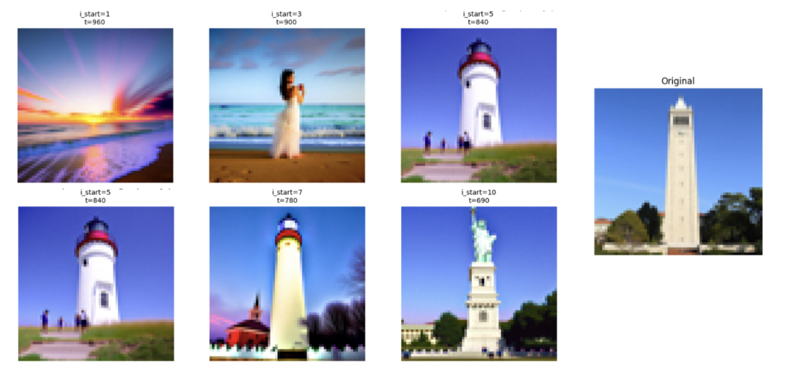
We also test it out on our own images!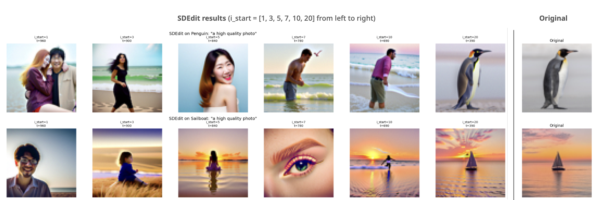
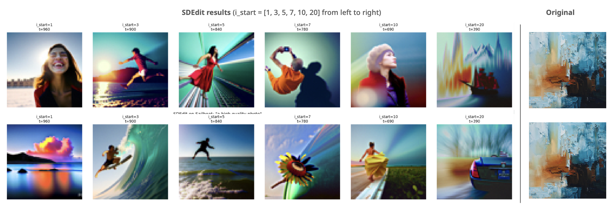 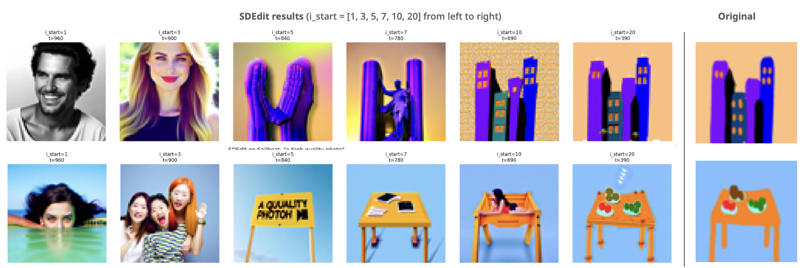
We can use the same procedure to implement inpainting. That is, given an image and a binary mask, we can create a new image that has the same content where is m is 0, but new content wherever m is 1. To do this, we can run the diffusion denoising loop. But at every step, after obtaining xt, we "force" xt to have the same pixels x0 whereever m = 0.
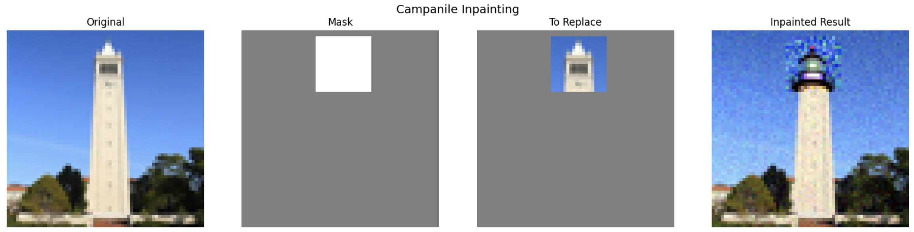 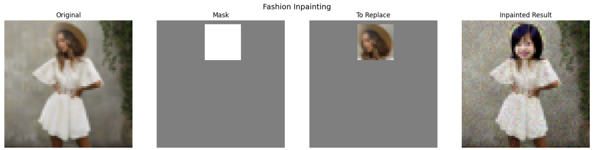 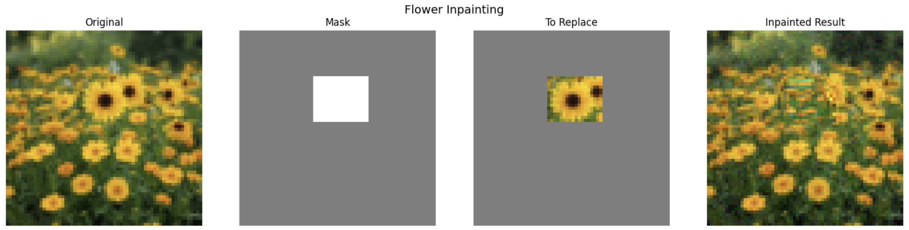We can use SDEdit and guide the projection with a text prompt, to go beyond a pure "projection to the natural image manifold".
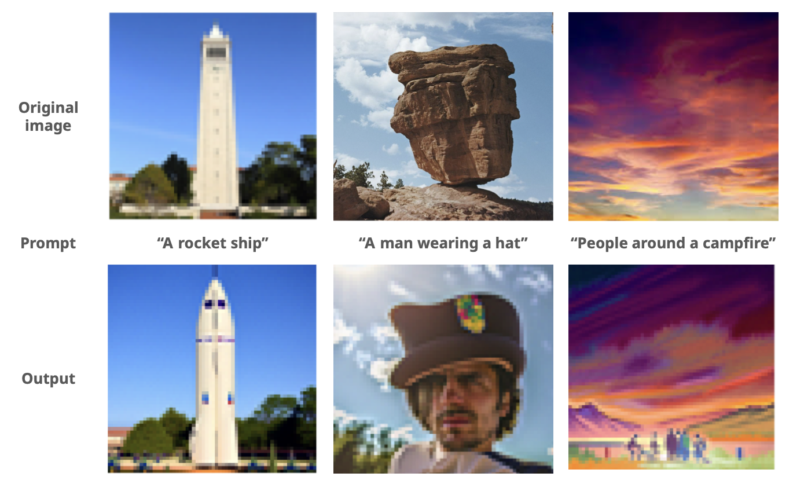 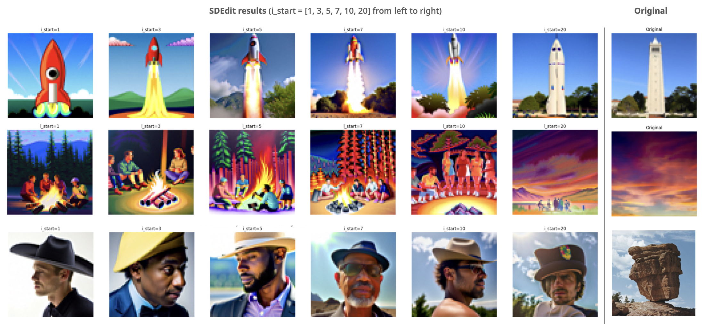Visual anagrams are images that change appearance when transformed, such as being rotated or flipped. We can create them by denoising an image xt at step t normally with the prompt p1 to obtain noise estimate e1. But at the same time, we will flip xt upside down, denoise with the prompt p2 to get noise estimate e2. We then e2 flip back and average the two noise estimates and use it to perform denoising.
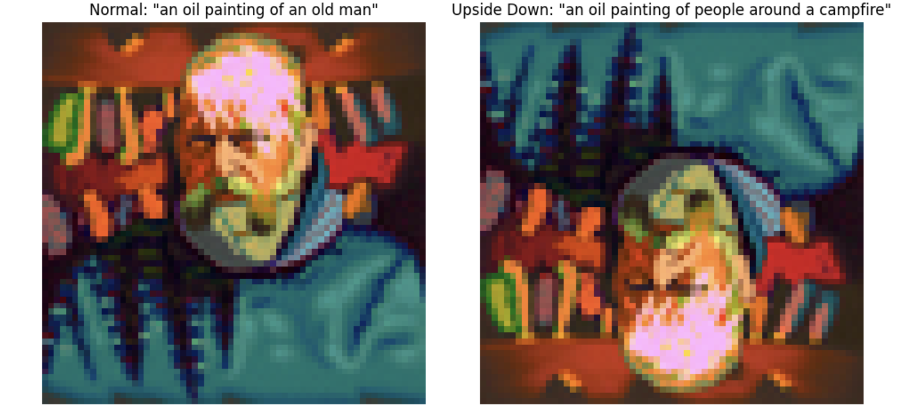 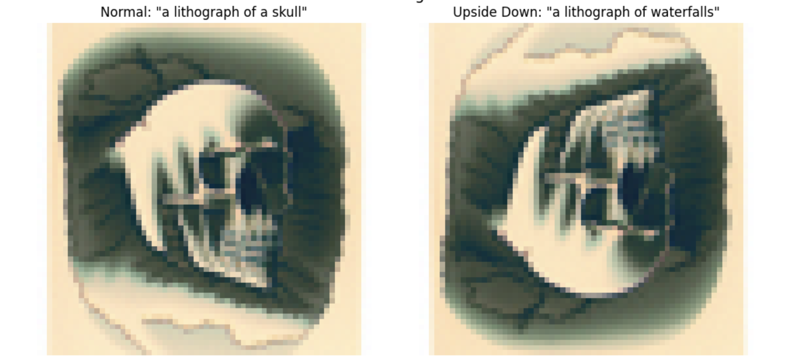 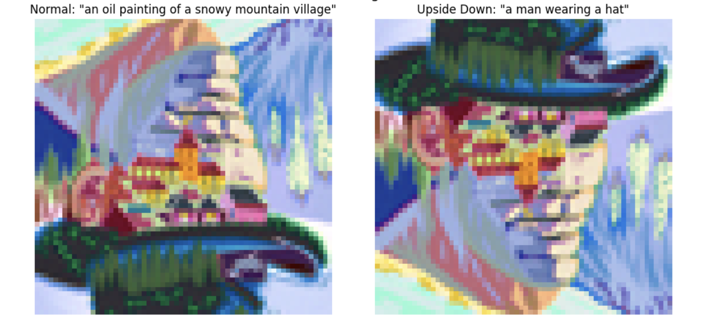In this part we'll implement Factorized Diffusion. To create hybrid images with a diffusion model we can use a similar technique as above and create a composite noise estimate by estimating the noise with two different text prompts. We can then combining low frequencies from one noise estimate with high frequencies of the other.
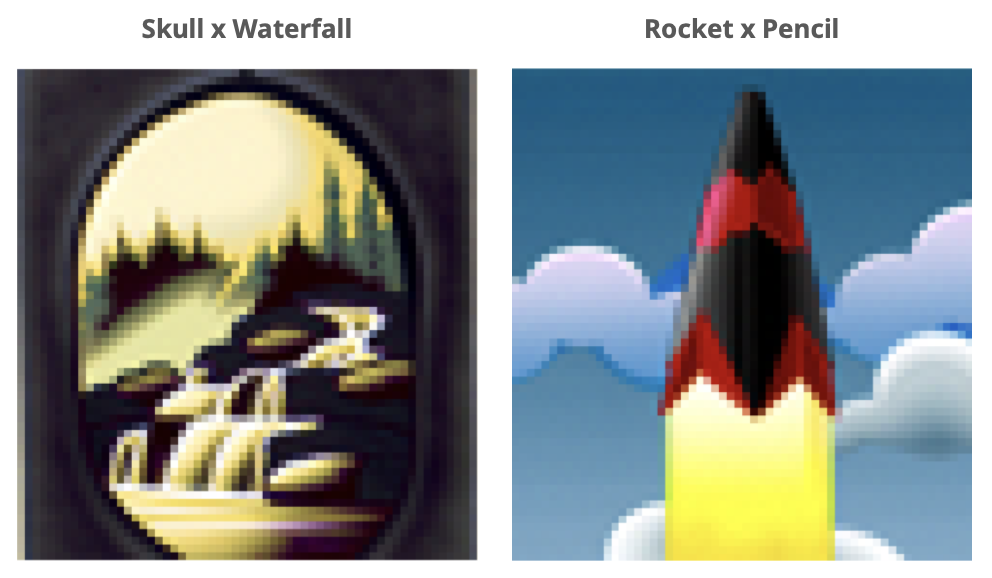Now, we move on to train our own model! We first create a simple one-step UNet denoiser that aims to map a noisy image to a clean image. It consists of a few downsampling and upsampling blocks with skip connections.

In the training process, we use images of digits from the MNIST dataset and add noise to the images (we use noise level σ=0.5, see image below for a visualisation of different noise levels). In the forward pass, we denoise the images and calculate the L2 loss between the output and target images. In the backward pass, we optimise the model with an Adam optimizer with learning rate of 1e-4.
Below, we visualise the denoising results after the 1st and 5th epoch as well as the loss curves.
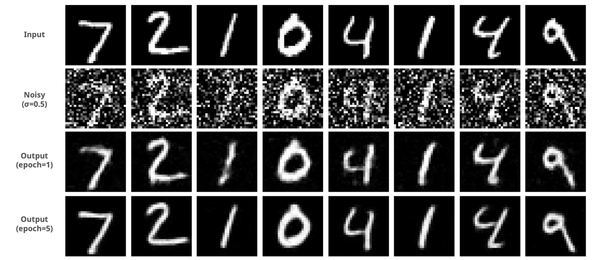 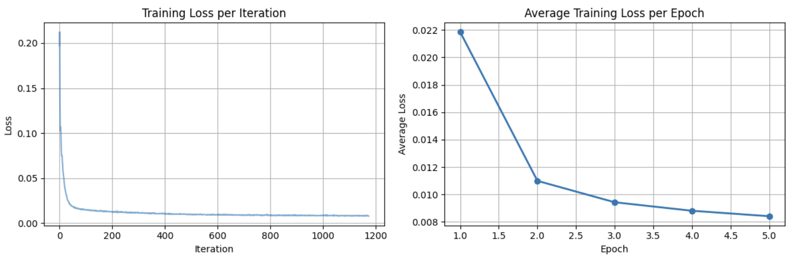Our above denoiser was trained on images with noise level σ=0.5. Lets see how it performs when trying to denoise images with other σs! We observe that it works well for noise levels up to σ=0.8.
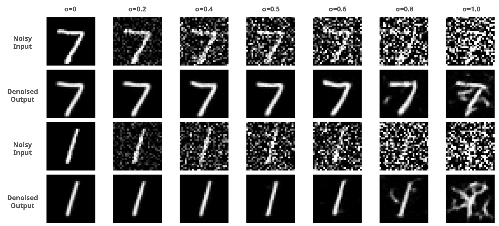To make denoising a generative task, we can denoise pure, random Gaussian noise. We repeat the same training process with pure noise as an input.
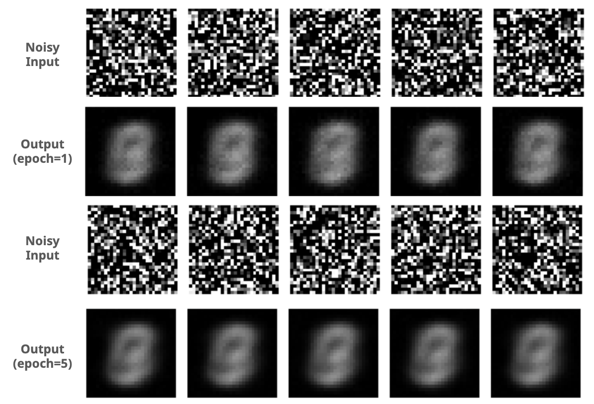 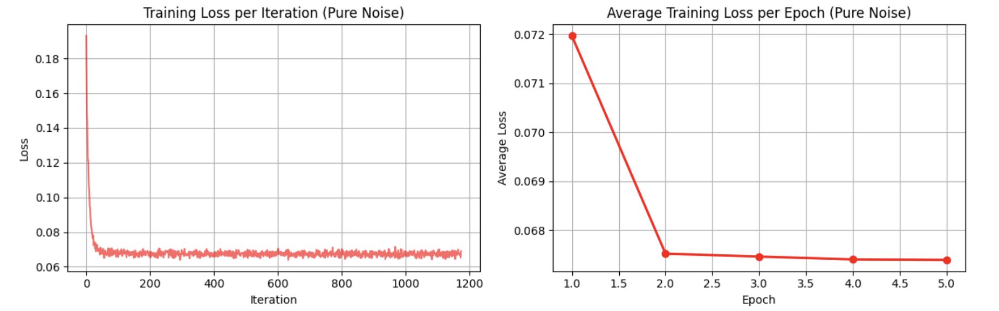We observe that all generated outputs appear as blurry, averaged versions of digits rather than distinct digits 0-9. This is due to the use of MSE as our loss function. When given pure noise, there is no information to determine which specific digit (0-9) should be generated. Under MSE loss, the optimal prediction minimises squared distances to all possible target digits, hence the model predicts the mean (centroid) of all posible targets. This makes our current model a poor generator.
We see that one step denoising does not work well for generative tasks, hence we move on to iteratively denoise the image with flow matching. Here, we train a UNet model to predict the `flow' or velocity field that transports samples from noise (x0) to clean data (x1). The simplest path would be a linear interpolation between: xt = (1-t)x0 + (t)x1 for some intermediate noisy sample xt at time t.
We now need to add time conditioning to UNet to inject scalar time t into it. This is so that the model can predict different flows at different times. At t=0.1 (mostly noise), the Unet needs to predict a large flow to move significantly toward clean data, while at t=0.9, it predicts a small flow for minor refinements. To do that, we add FCBlocks that transform the scalar time t ∈ [0,1] into feature vectors that modulate (modify) the UNet's internal representations.t1 = fcblock1(t); x = x * t1 This scales the feature activations based on the current time, allowing the network to adjust its predictions.
Below, we show the loss curves using our new time-conditioned model and the denoising results after the 1st and 5th epoch.
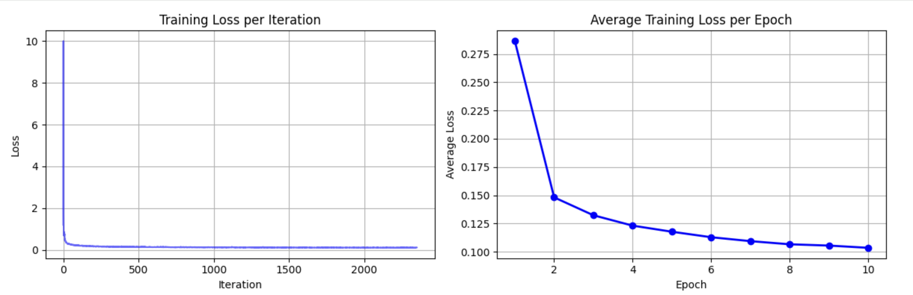 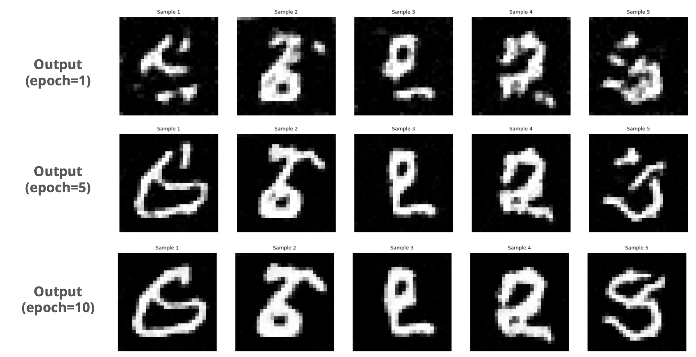
To make the results better and give us more control for image generation, we can also apply class conditioning.
This essentially tells the model: "Generate a specific digit (e.g., digit 7)" rather than just generating any random digit.
Instead of just giving the UNet a noisy image x_t and time t, we also give it a class label c which is converted to a one-hot vector. The
The one-hot vector is passed through FCBlocks to create rich feature embeddings that capture "what it means to be a 7" in high-dimensional feature space.
The class embeddings modulate (modify) the UNet's internal features (in addition to the time embeddings).
t1 = fcblock1(t); c1 = fcblock2(c_onehot); x = x * c1 + t1
Below, we visualise the loss curves using our new class-conditioned model as well as the denoising results after the 1st, 5th, and 10th epoch.
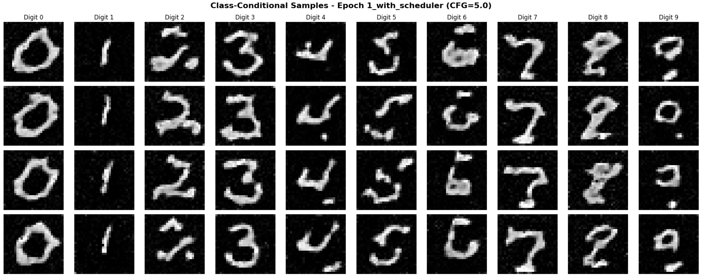 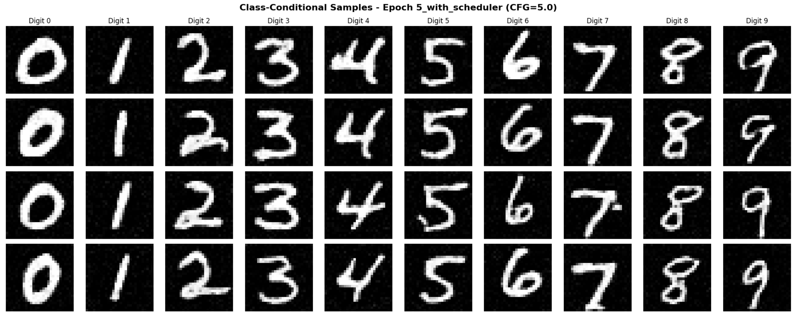 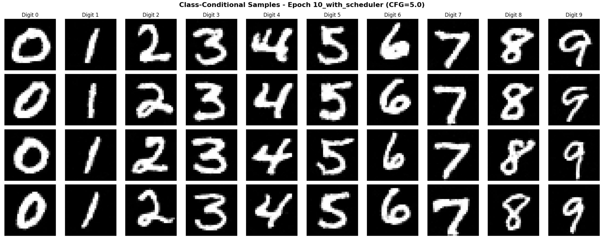 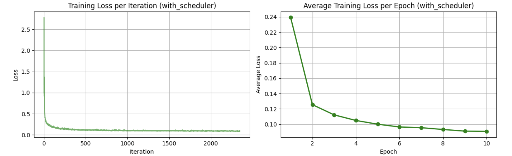We also compare results from 2 training processes - one with an exponential learning rate scheduler (starts at 1e-2, decays by 0.9 each epoch) and one without. To maintain similar performance after removing the scheduler, we use a lower learning rate throughout (fixed at 5e-3 (0.5 × 1e-2)). We may want to use constant learning rates to avoid the risk of being stuck in poor local minima early on. However, in general, using a scheduler can allow faster initial convergence and better fine-tuning at the end.
Below, we compare the loss curves and denoising results at the 10th epoch for both training methods (with vs without scheduler). We see that the results are similar. 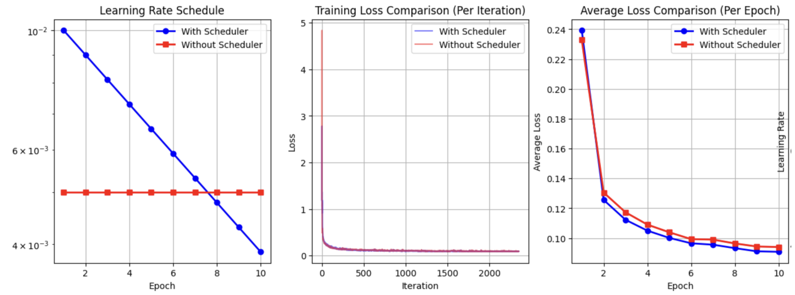 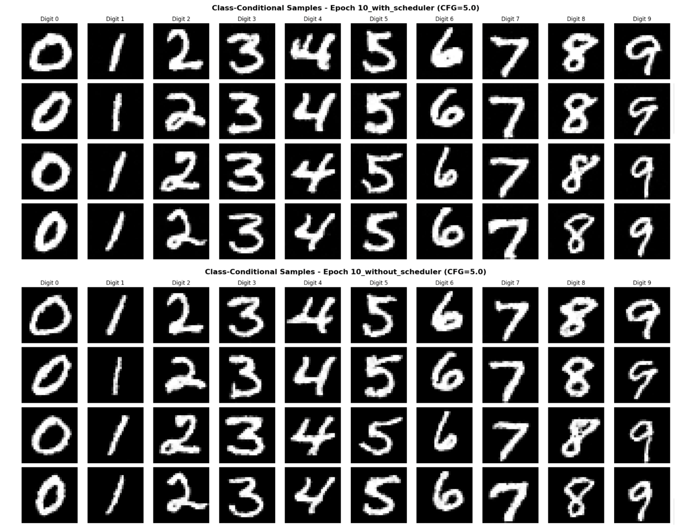